|
4-4-2
|
Canada | 0 | - | 3 | Morocco |
4-2-3-1
|
| HT 0-0 | ||||||
|
FIFA World CupSaturday 4 July 2026
|
||||||
- Venue
- Houston Stadium
- Attendance
- 68,777
- Referee
- Michael Oliver
Yellow card40'
R. Laryea
Yellow card43'
J. David
Yellow card49'
L. De Fougerolles
Substitution63'
T. Oluwaseyi
C. Larin
Yellow card67'
C. Larin
- 2
Substitution78'
A. Ahmed
P. David
R. Laryea
J. Shaffelburg
- 2
Substitution87'
N. Sigur
J. Osorio
T. Buchanan
J. Nelson
Whistle45+7'
45+7'
Yellow card20'
R. Halhal
Substitution22'
I. Saibari
S. Rahimi
Yellow card40'
A. Hakimi
Yellow card45'
A. Ounahi
Yellow card45+6'
B. El Khannouss
Goal50'
A. Ounahi
Assist: A. Hakimi
- 2
Substitution63'
B. El Khannouss
C. Talbi
A. Bouaddi
S. Amrabat
Goal82'
A. Ounahi
Assist: B. Díaz
- 2
Substitution87'
I. Diop
M. Saadane
A. Ounahi
S. El Mourabet
Goal90+8'
S. Rahimi
Assist: B. Díaz
Canada | |
|---|---|
Goalkeeper | |
| 16 | M. Crépeau |
Defender | |
| 2 | A. Johnston |
| 4 | L. De Fougerolles 49' |
| 15 | M. Bombito |
| 22 | R. Laryea 40'78' |
Midfielder | |
| 7 | S. Eustaquio |
| 17 | T. Buchanan 87' |
| 20 | A. Ahmed 78' |
| 23 | N. Sigur 87' |
Forward | |
| 10 | J. David 43' |
| 12 | T. Oluwaseyi 63' |
Substitutes | |
| 9 | C. Larin 63'67' |
| 14 | J. Shaffelburg 78' |
| 21 | J. Osorio 87' |
| 24 | P. David 78' |
| 26 | J. Nelson 87' |
Morocco | |
Goalkeeper | |
| 1 | Y. Bounou |
Defender | |
| 2 | A. Hakimi 40' |
| 3 | N. Mazraoui |
| 14 | I. Diop 87' |
| 25 | R. Halhal 20' |
Midfielder | |
| 6 | A. Bouaddi 63' |
| 8 | A. Ounahi 45'50'82'87' |
| 10 | B. Díaz |
| 23 | B. El Khannouss 45+6'63' |
| 24 | N. El Aynaoui |
Forward | |
| 11 | I. Saibari 22' |
Substitutes | |
| 4 | S. Amrabat 63' |
| 5 | M. Saadane 87' |
| 7 | C. Talbi 63' |
| 9 | S. Rahimi 22'90+8' |
| 15 | S. El Mourabet 87' |


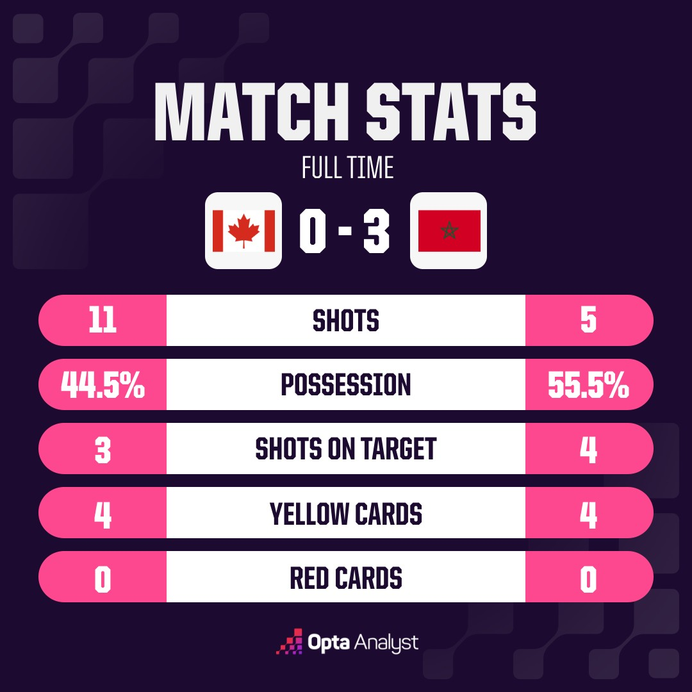
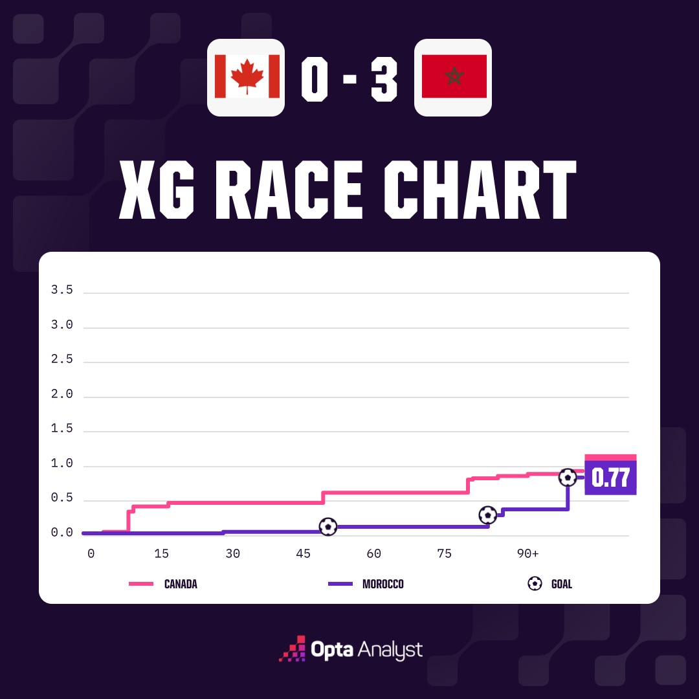
101'
Morocco attempted 5 shots in this game, their lowest total in a single match in the 2026 FIFA World Cup.
101'
Canada attempted 10 shots in this game, their lowest total in a single match in the 2026 FIFA World Cup.
101'
Morocco are undefeated in their last 5 games in the FIFA World Cup, their last longer unbeaten streak was from 25th June 2018 to 10th December 2022, a run of 6 games.
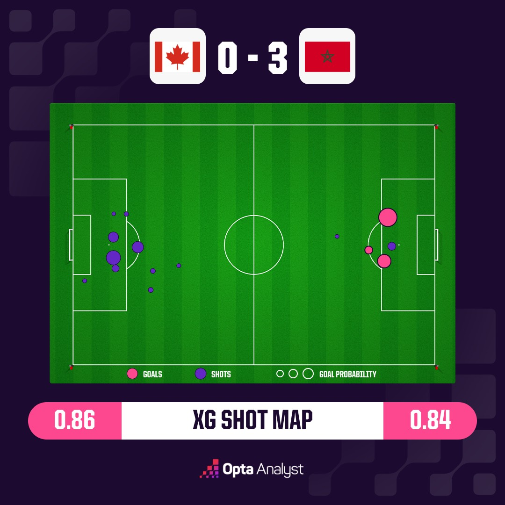
90+10'
IT’S ALL OVER! Morocco have taken the victory, winning 0-3 thanks to goals from Soufiane Rahimi and Azzedine Ounahi. Morocco can celebrate, but Canada will have to lick their wounds.
90+8'
Brahim Díaz has assisted his fourth goal in the 2026 FIFA World Cup.
90+8'
Morocco have scored 3 goals in the FIFA World Cup game for the first time since 24th June 2026 against Haiti (W4-2).
90+8'
Soufiane Rahimi has scored his second goal in the 2026 FIFA World Cup, netting for the first time since 24th June 2026 against Haiti.
90+8'
GOAL! It is 3-0 to Morocco now, with Soufiane Rahimi having put them will in control. Is there any way back for Canada, or will Morocco see this one out with ease?
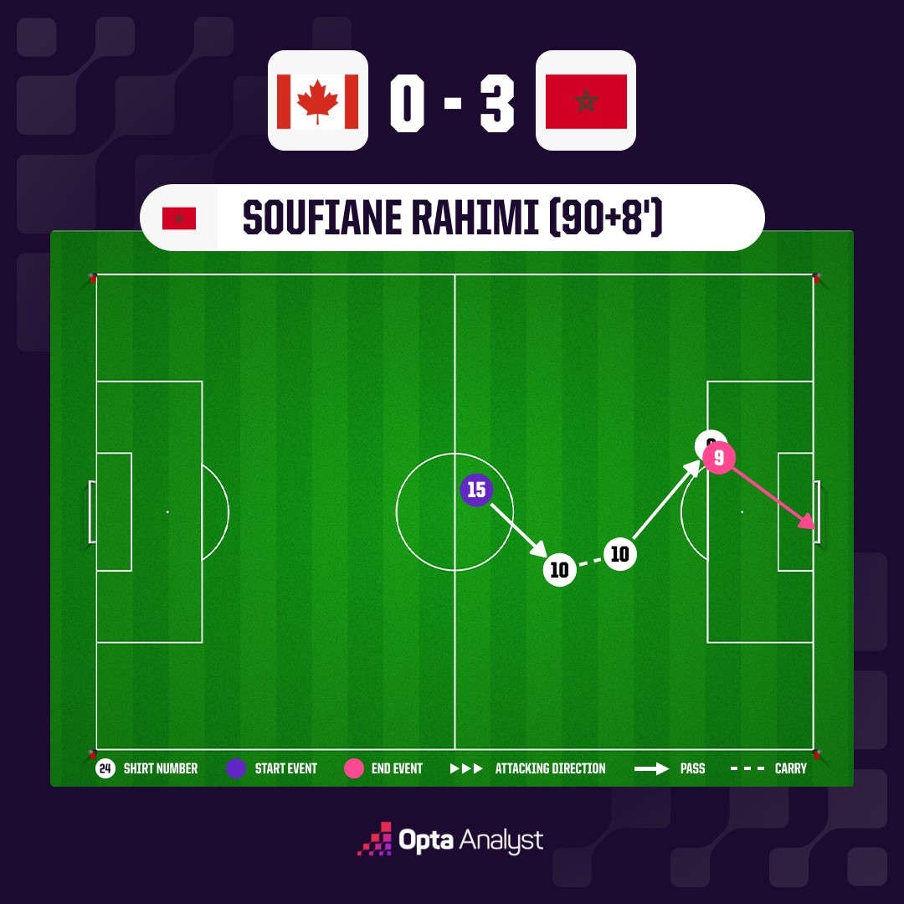
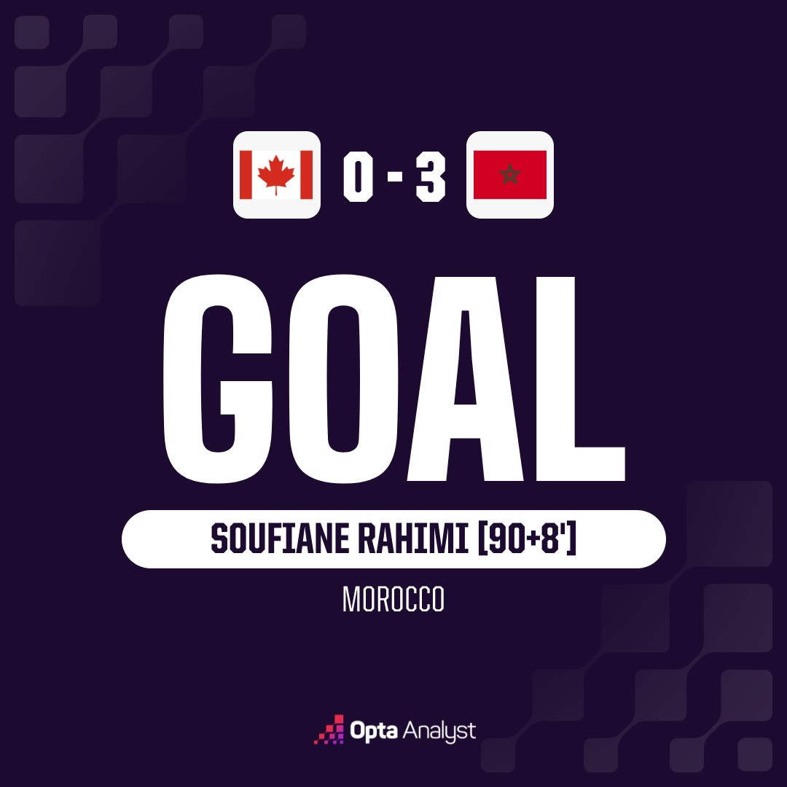
90+7'
Free-kick! A foul from Jacob Shaffelburg on Soufiane Rahimi. It is well away from Canada’s goal, so it is unlikely to result in a chance for Morocco.
90+7'
Plenty of the ball in the last quarter-of-an-hour of this match for Canada, but still Morocco stand firm, despite having had only 22.41% of the ball in that period. Can Canada make their possessional dominance count?
90+7'
MISS! A shot from Jayden Nelson ends up being off target. They might have done a bit better with that one, but it remains Canada 0-2 Morocco.
90+6'
Foul! A free-kick now in a dangerous area for Canada, after Jacob Shaffelburg is fouled by Soufiane Rahimi. Can Canada make the most of this opportunity?
90+5'
It’s backs to the wall now — Morocco throwing everything into defending their advantage, with a flurry of crucial interventions.
90+3'
Free-kick! A foul from Maxime Crépeau on Marwane Saadane. It is well away from Canada’s goal, so it is unlikely to result in a chance for Morocco.
90+2'
A free-kick to Canada, as Soufiane Rahimi goes in and fouls Jonathan Osorio. However, Morocco will not mind giving one away in this area too much, with plenty of distance to their goal.
90+1'
BLOCK! An intervention from Noussair Mazraoui might have just prevented a goal, with the defending player getting in the way of an attempt from Jonathan Osorio. Solid defending there!
90+1'
A rash challenge from Redouane Halhal, who sends Promise David tumbling, giving Canada a free-kick. It is not in a threatening position, but it gives them a chance to get back on the ball.
90+1'
It’s backs to the wall now — Morocco throwing everything into defending their advantage, with a flurry of crucial interventions.
88'
A free-kick to Morocco, as Promise David goes in and fouls Yassine Bounou. However, Canada will not mind giving one away in this area too much, with plenty of distance to their goal.
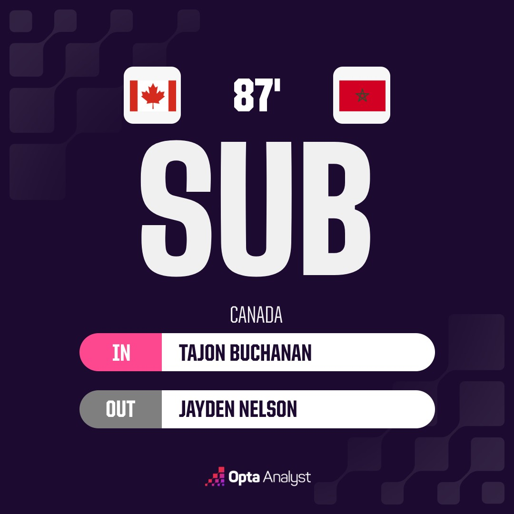
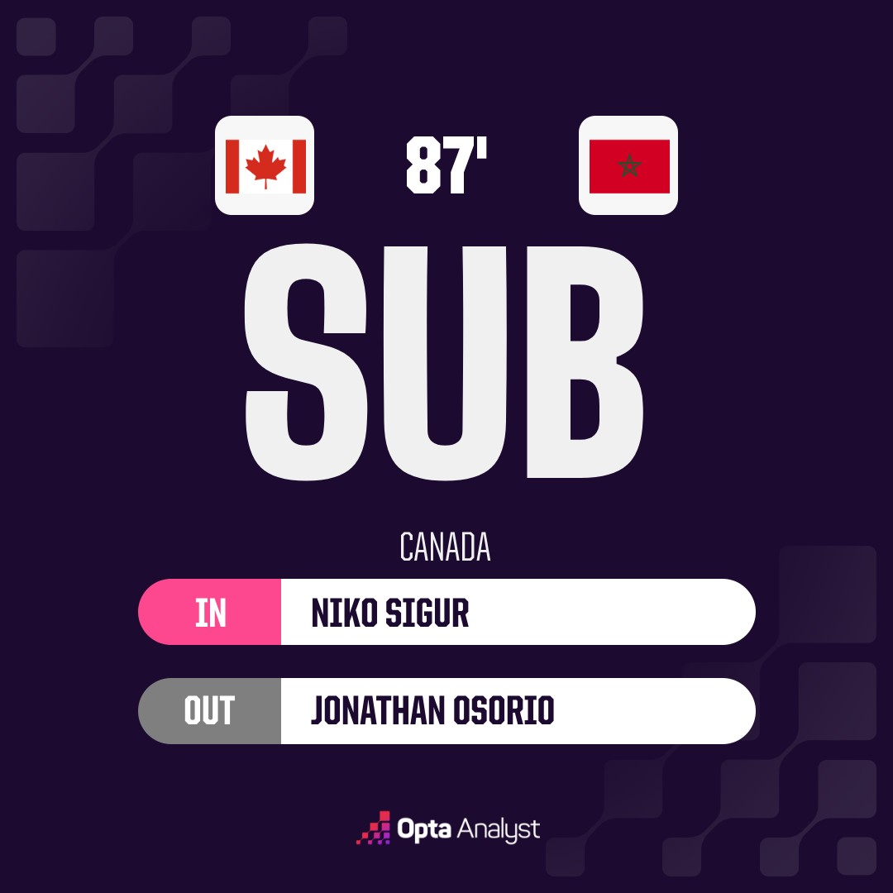
87'
Canada are making a tactical change. Tajon Buchanan is leaving the field and in their place comes Jayden Nelson – we will soon see if this switch has the desired impact.
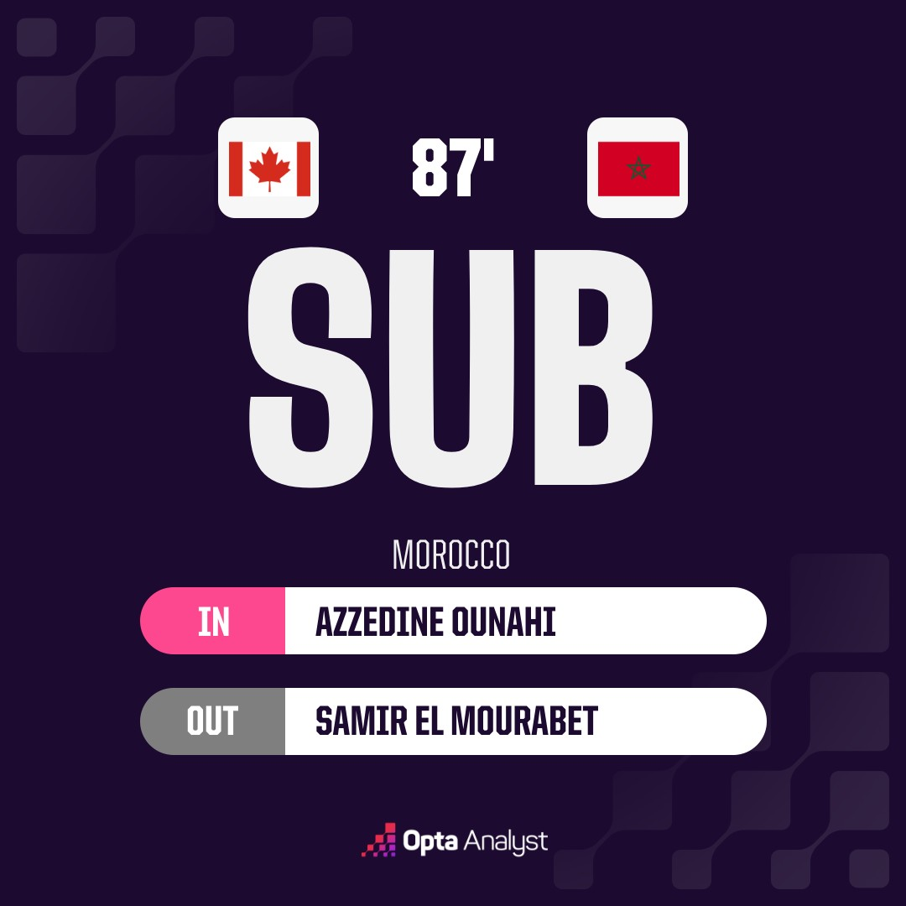
87'
Canada are making a tactical change. Niko Sigur is leaving the field and in their place comes Jonathan Osorio – we will soon see if this switch has the desired impact.
87'
The Morocco manager is looking to the substitutes’ bench, bringing on Samir El Mourabet in place of Azzedine Ounahi. Will the change make a difference? Let’s find out!
87'
Substitution! Marwane Saadane replaces Issa Diop for Morocco as the manager shuffles the pack. Can Marwane Saadane make an impression as this match continues?
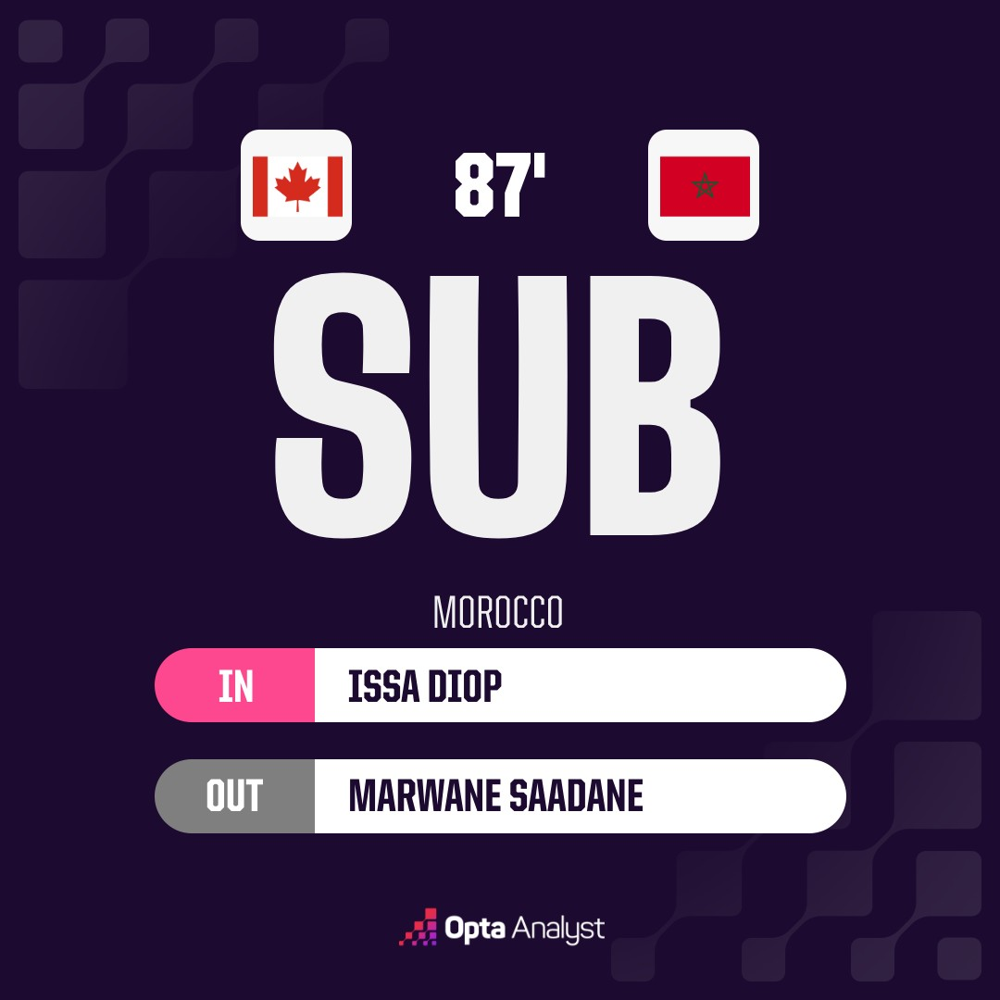
87'
This could be a chance for Canada, after Sofyan Amrabat fouls Jonathan David, handing them a free-kick in a threatening area. A good set-piece from here could really test the Morocco defense!
85'
MISS! Soufiane Rahimi fluffs their lines, and will Morocco be made to pay for that miss? Canada could have been down and out if that attempt had gone in, but at least they have not fallen even further behind in this contest.
84'
BLOCK! An intervention from Issa Diop might have just prevented a goal, with the defending player getting in the way of an attempt from Jonathan David. Solid defending there!
84'
It’s backs to the wall now — Morocco throwing everything into defending their advantage, with a flurry of crucial interventions.
84'
Brahim Díaz goes in on Luc De Fougerolles and concedes a foul. The free-kick is not in a particularly dangerous area from Morocco’s viewpoint, though.
82'
Brahim Díaz has assisted his third goal in the 2026 FIFA World Cup.
82'
Azzedine Ounahi has scored his second goal in the 2026 FIFA World Cup.
82'
Is that game over? Morocco are now well ahead, having extended their lead to 2 goals thanks to Azzedine Ounahi’s effort. It’s now 2-0, and Canada face an uphill battle to get back into it.
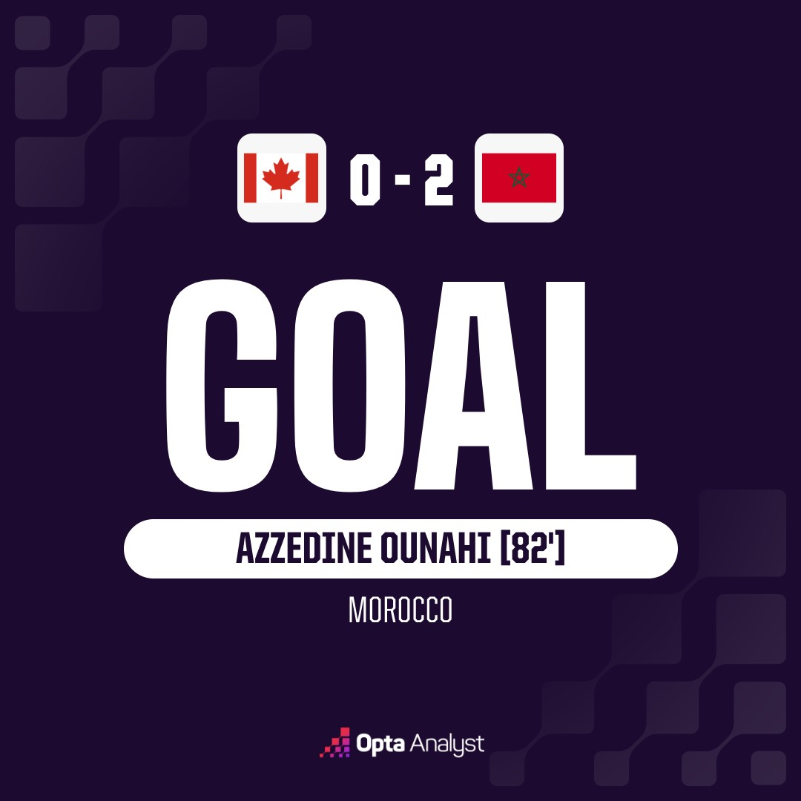
81'
A foul from Sofyan Amrabat on Stephen Eustaquio sees Canada win a free-kick, but it is not in a dangerous position, so Morocco should be confident they can defend it easily enough.
80'
A foul from Promise David on Noussair Mazraoui sees Morocco win a free-kick, but it is not in a dangerous position, so Canada should be confident they can defend it easily enough.
80'
It has been 30 minutes since Morocco last attempted a shot in this game.
79'
Tajon Buchanan's effort is deflected out for a corner. Can Canada make anything of this set-piece?
78'
Richie Laryea’s match is over as Canada decide to make a substitution. Jacob Shaffelburg enters the field in what looks like a tactical change.
78'
Canada are making a tactical change. Ali Ahmed is leaving the field and in their place comes Promise David – we will soon see if this switch has the desired impact.
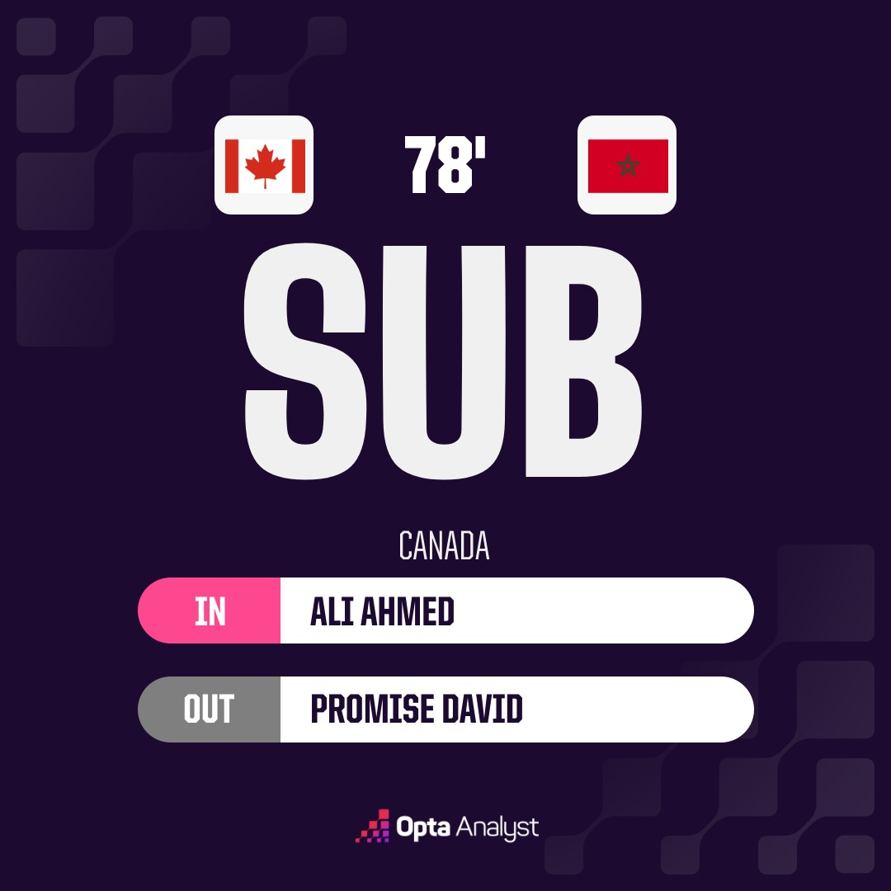
78'
A chance goes begging as Jonathan David gets off a shot that does not hit the target. They might have done better with that one, but instead it is a goal-kick to Morocco.
76'
This could be a chance for Canada, after Sofyan Amrabat fouls Stephen Eustaquio, handing them a free-kick in a threatening area. A good set-piece from here could really test the Morocco defense!
76'
Morocco have had more of the ball with 75 minutes played, with 61.69% possession compared to Canada’s 38.31%. That is not likely to change too much in the final 15 minutes.
71'
No goalmouth action for some time now, with neither team having had a shot in the past 10 minutes. Will there be a moment that changes things soon? Morocco have seen plenty of the ball, however, with 63 per cent of the possession in their favour during that period.
67'
The referee goes to their pocket and pulls out a yellow card, which is brandished in the direction of Cyle Larin. Will they be able to avoid a second booking?
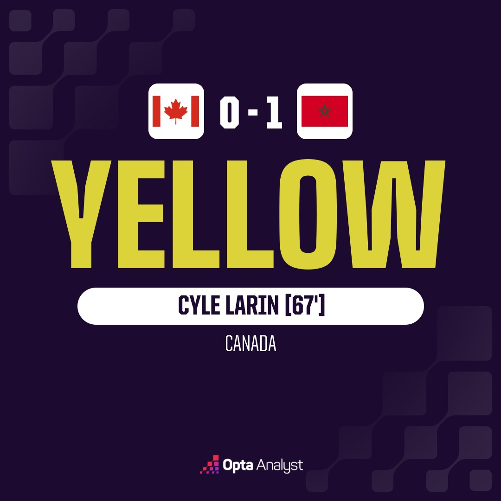
67'
A free-kick to Morocco, as Cyle Larin goes in and fouls Yassine Bounou. However, Canada will not mind giving one away in this area too much, with plenty of distance to their goal.
66'
No luck – it’s offside! Richie Laryea looked to dart in behind and get on the end of a pass, yet they just went too early, and the flag is up to signal offside.
66'
With 25 minutes left to play, this game is about to go into its final quarter. So, that seems a good chance to check on the shot count. Canada have had 5 efforts, with 2 of those hitting the target. Morocco, on the other hand, have had 2 shots, getting 2 of those attempts on target.
65'
Free-kick! A foul from Ali Ahmed on Sofyan Amrabat. It is well away from Canada’s goal, so it is unlikely to result in a chance for Morocco.
63'
The Canada manager is looking to the substitutes’ bench, bringing on Cyle Larin in place of Tani Oluwaseyi. Will the change make a difference? Let’s find out!
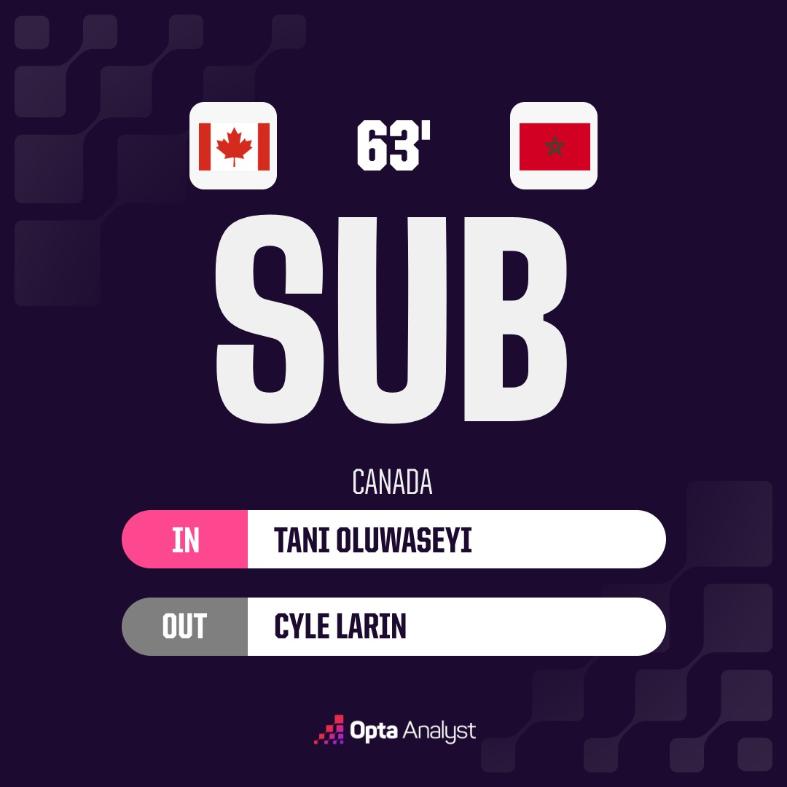
63'
A substitution for Morocco sees Ayyoub Bouaddi replaced by Sofyan Amrabat. There does not appear to be any obvious sign of an injury, so that is a tactical switch.
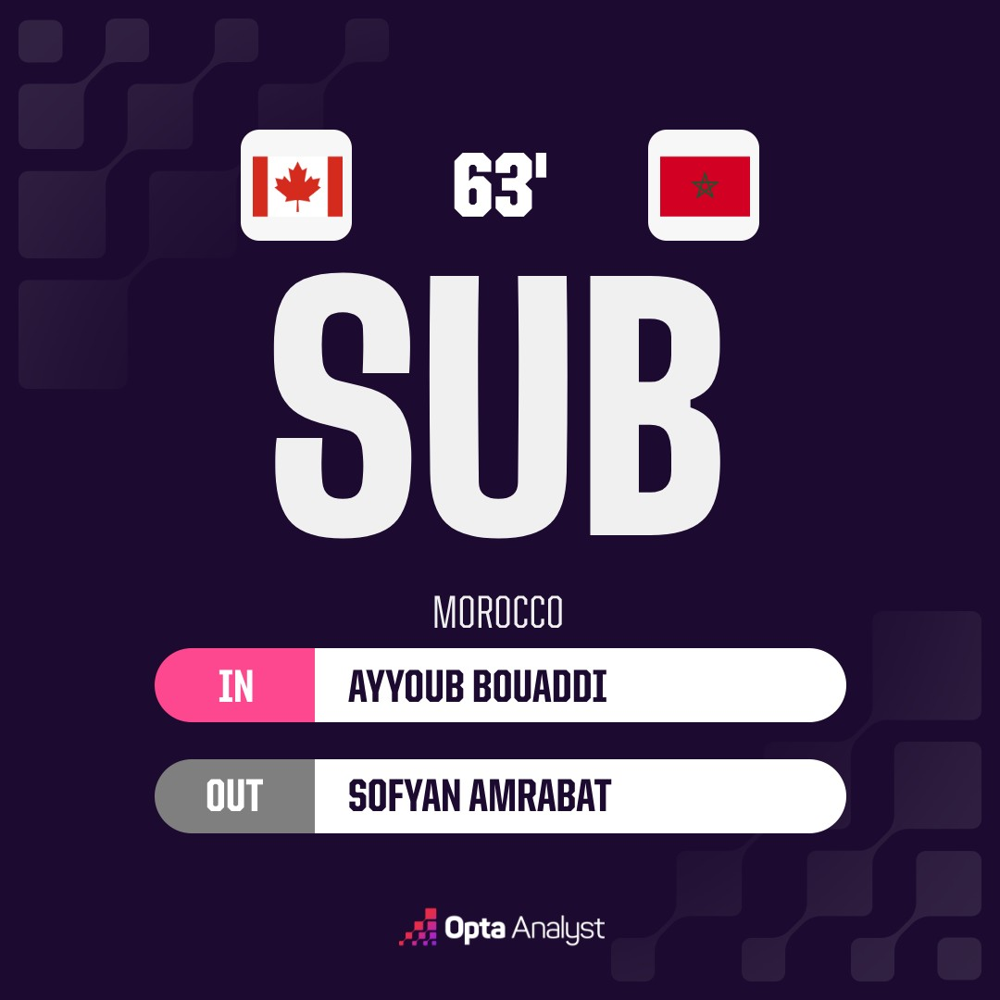
63'
Bilal El Khannouss’s match is over as Morocco decide to make a substitution. Chemsdine Talbi enters the field in what looks like a tactical change.
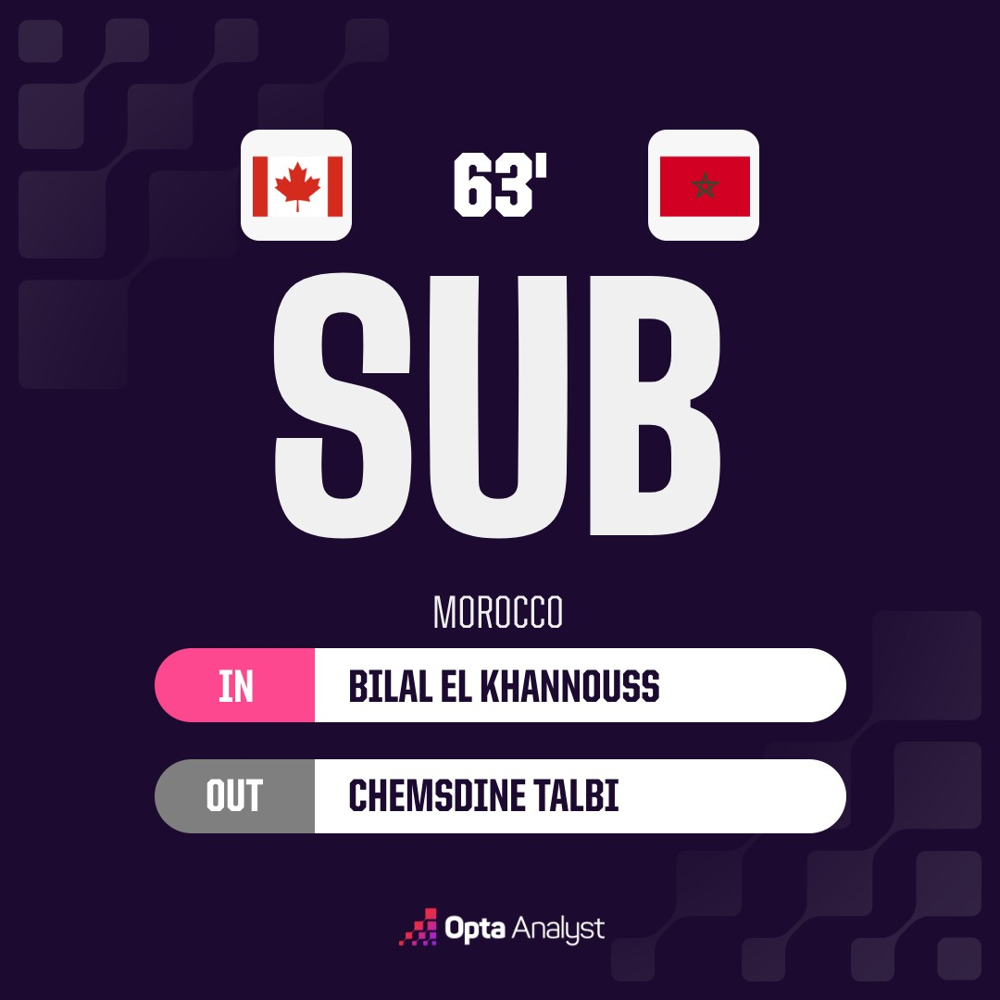
62'
Tani Oluwaseyi goes in on Ayyoub Bouaddi and concedes a foul. The free-kick is not in a particularly dangerous area from Canada’s viewpoint, though.
61'
A lull in this match, as the teams prob and probe, but without much success. It has been 10 minutes since there was an attempt from either side, though Canada are seeing more of the ball, with 62 per cent possession to Morocco’s 38 per cent during that time.
60'
The Morocco defence steps up in time and there is a frustration for Tajon Buchanan, who thought they were through until the flag goes up to signal offside.
59'
Excellent defensive work from Morocco; their organization and success in key duels are effectively safeguarding their lead.
58'
A chance now for Canada to get a good delivery into the box, after the ball is diverted behind for a corner. Canada have been pushing for what would be a key goal, but Morocco have stood firm so far.
58'
A rash challenge from Achraf Hakimi, who sends Richie Laryea tumbling, giving Canada a free-kick. It is not in a threatening position, but it gives them a chance to get back on the ball.
53'
Offside! Soufiane Rahimi thought they were through on goal, but the Canada defence stepped up in time to catch them offside, and the assistant referee puts their flag up.
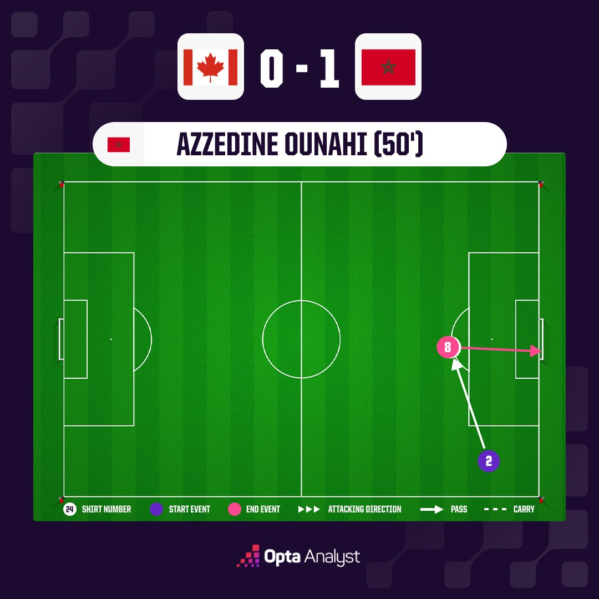
50'
Achraf Hakimi has assisted his second goal in the 2026 FIFA World Cup.
50'
Morocco have avoided defeat in their last 9 matches when scoring first in the FIFA World Cup, since a 1-2 loss to Germany on 3rd June 1970.
50'
Azzedine Ounahi has scored his first goal in the 2026 FIFA World Cup.
50'
GOAL! This has been quite the game! Morocco lead now and the goals continue to arrive. It is a strike from Azzedine Ounahi that has given them the advantage. Azzedine Ounahi beats the goalkeeper from outside the penalty area and it is game on in this thrilling battle!
49'
A yellow card for Canada's Luc De Fougerolles. They will have to walk a tightrope for the rest of this match, and Morocco will likely look to target them and draw a second bookable offence.
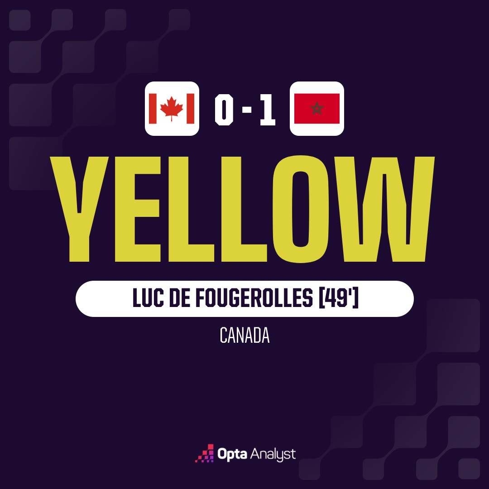
49'
This could be a chance for Morocco, after Luc De Fougerolles fouls Soufiane Rahimi, handing them a free-kick in a threatening area. A good set-piece from here could really test the Canada defense!
49'
A chance goes begging as Luc De Fougerolles gets off a shot that does not hit the target. They might have done better with that one, but instead it is a goal-kick to Morocco.
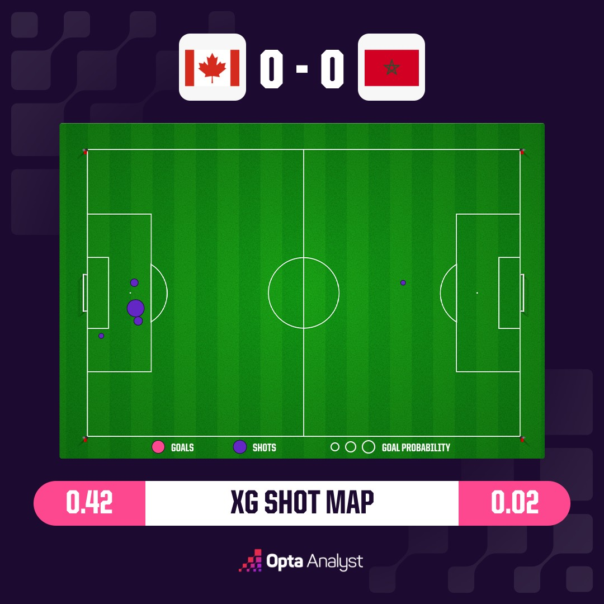
45+7'
Half-time! We reach the interval with the score level at 0-0 between Canada and Morocco. Will we see a winner in the second half?
45+6'
Yellow card! Bilal El Khannouss will have to be careful from now on after they are cautioned.
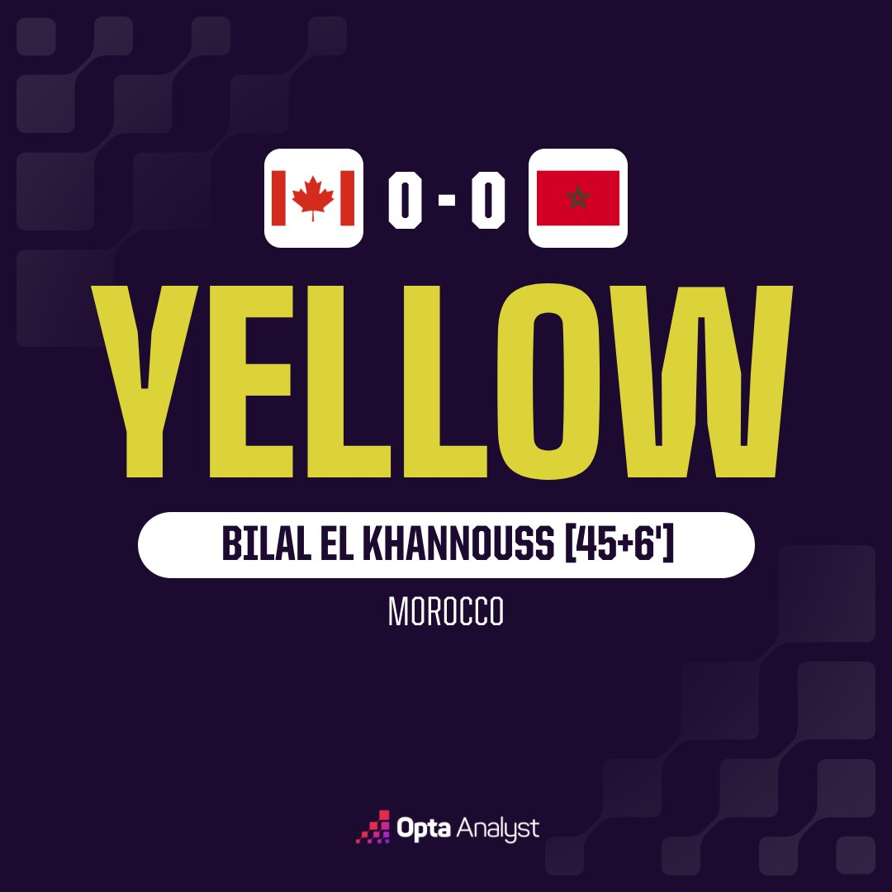
45+6'
Bilal El Khannouss goes in on Luc De Fougerolles and concedes a foul. The free-kick is not in a particularly dangerous area from Morocco’s viewpoint, though.
45+4'
No goalmouth action for some time now, with neither team having had a shot in the past 10 minutes. Will there be a moment that changes things soon? Morocco have seen plenty of the ball, however, with 76 per cent of the possession in their favour during that period.
45+3'
It has been 30 minutes since Canada last attempted a shot in this game.
45+2'
Free-kick! A foul from Niko Sigur on Redouane Halhal. It is well away from Canada’s goal, so it is unlikely to result in a chance for Morocco.
45+1'
A foul from Jonathan David on Azzedine Ounahi sees Morocco win a free-kick, but it is not in a dangerous position, so Canada should be confident they can defend it easily enough.
45+1'
That is a booking for Azzedine Ounahi, who has received their first yellow card. They are not happy with the decision, but it is done now, and they will have to be careful for the rest of this game.
45+1'
Azzedine Ounahi goes in on Ali Ahmed and concedes a foul. The free-kick is not in a particularly dangerous area from Morocco’s viewpoint, though.
44'
There is plenty of possession for Morocco, with 77.50% compared to Canada’s 22.50% in the last 15 minutes. However, Morocco have not been able to turn that dominance of the ball into a goal or even a shot during the period – which will be a huge frustration for their coach.
43'
The referee goes to their pocket and pulls out a yellow card, which is brandished in the direction of Jonathan David. Will they be able to avoid a second booking?
43'
Jonathan David goes in on Brahim Díaz and concedes a foul. The free-kick is not in a particularly dangerous area from Canada’s viewpoint, though.
42'
We're witnessing a tactical stalemate, with neither side willing to show their hand.
41'
Bilal El Khannouss goes in on Niko Sigur and concedes a foul. The free-kick is not in a particularly dangerous area from Morocco’s viewpoint, though.
40'
A yellow card for Canada's Richie Laryea. They will have to walk a tightrope for the rest of this match, and Morocco will likely look to target them and draw a second bookable offence.
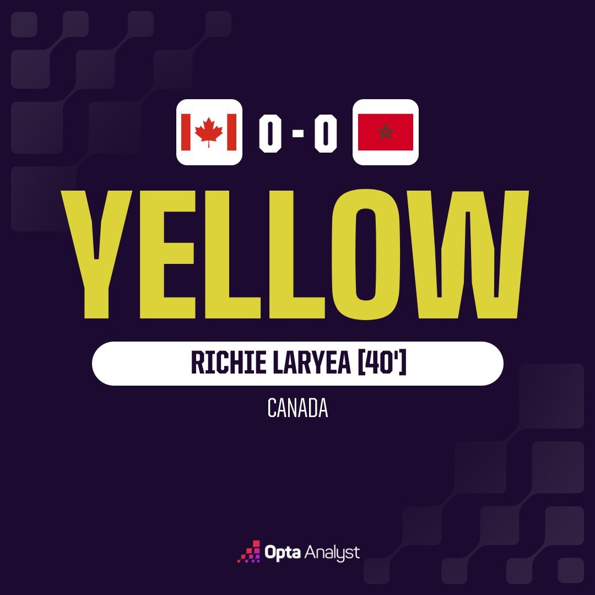
40'
That is a booking for Achraf Hakimi, who has received their first yellow card. They are not happy with the decision, but it is done now, and they will have to be careful for the rest of this game.
39'
Achraf Hakimi goes in on Richie Laryea and concedes a foul. The free-kick is not in a particularly dangerous area from Morocco’s viewpoint, though.
39'
Morocco are having plenty of the ball, with 65.55% possession in the last 15 minutes. However, they have been unable to transfer that possessional dominance into a goal during that period.
39'
This game is certainly in a bit of a lull now, with neither team having had an attempt at goal in the past 10 minutes. It could do with something to spark it into life. Morocco have had more possession during the quiet spell, but are yet to do much with it.
38'
A free-kick to Morocco, as Niko Sigur goes in and fouls Azzedine Ounahi. However, Canada will not mind giving one away in this area too much, with plenty of distance to their goal.
37'
A foul from Moïse Bombito on Noussair Mazraoui sees Morocco win a free-kick, but it is not in a dangerous position, so Canada should be confident they can defend it easily enough.
35'
A free-kick to Morocco, as Luc De Fougerolles goes in and fouls Ayyoub Bouaddi. However, Canada will not mind giving one away in this area too much, with plenty of distance to their goal.
34'
Corner! Canada are pushing for a goal and now they have an opportunity from this set-piece.
32'
Soufiane Rahimi makes a run in behind but the Canada defensive line were alert, and stepped up in time to catch them offside. That run just needed to be timed better.
30'
Free-kick! A foul from Luc De Fougerolles on Noussair Mazraoui. It is well away from Canada’s goal, so it is unlikely to result in a chance for Morocco.
29'
That was hopeful! A bit of a punt from Soufiane Rahimi, who goes for goal from distance, but Maxime Crépeau makes the save.
28'
Alistair Johnston goes in on Bilal El Khannouss and concedes a foul. The free-kick is not in a particularly dangerous area from Canada’s viewpoint, though.
24'
Free-kick! A foul from Jonathan David on Redouane Halhal. It is well away from Canada’s goal, so it is unlikely to result in a chance for Morocco.
22'
An enforced substitution for Morocco, as Ismael Saibari cannot carry on after sustaining an injury. Soufiane Rahimi has hastily warmed up and now made their way onto the pitch in Ismael Saibari's place.
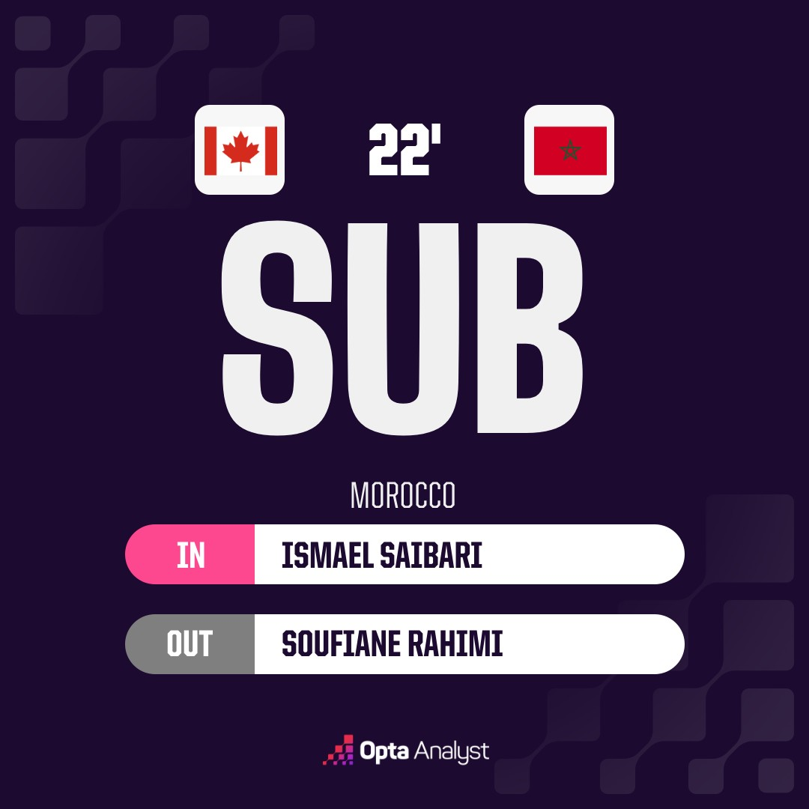
20'
A yellow card for Morocco's Redouane Halhal. They will have to walk a tightrope for the rest of this match, and Canada will likely look to target them and draw a second bookable offence.
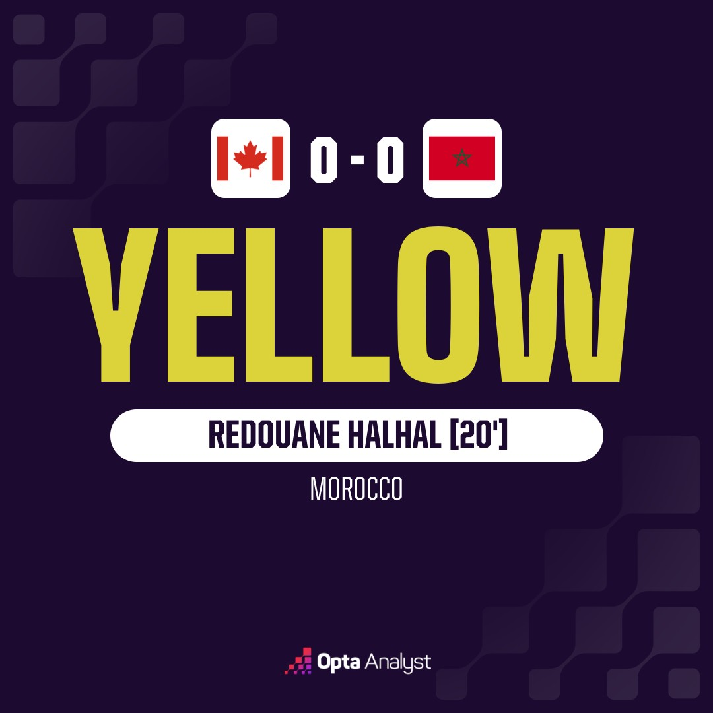
20'
Foul! A free-kick now in a dangerous area for Canada, after Tani Oluwaseyi is fouled by Redouane Halhal. Can Canada make the most of this opportunity?
18'
Great block from Achraf Hakimi, as they get in the way of an attempt from Alistair Johnston that might have been set to cause the goalkeeper some problems. Solid defending from the Morocco player.
18'
Can Morocco survive here? They will have some defending to do after the ball is turned behind for a corner kick. Will Canada take this opportunity and grab the goal they have been pushing for?
17'
The Canada defence steps up in time and there is a frustration for Ismael Saibari, who thought they were through until the flag goes up to signal offside.
16'
Richie Laryea goes in on Achraf Hakimi and concedes a foul. The free-kick is not in a particularly dangerous area from Canada’s viewpoint, though.
16'
Morocco have had plenty of the ball in the last 15 minutes, with 69.38% possession compared to just 30.63% for their opponents. However, there has not been any shot to come from that possessional dominance, which will be a huge frustration for their coach.
15'
Richie Laryea goes in on Achraf Hakimi and concedes a foul. The free-kick is not in a particularly dangerous area from Canada’s viewpoint, though.
11'
This feels like a spell that could matter - Morocco earning repeated chances to swing it in from wide areas.
11'
Tajon Buchanan goes in on Azzedine Ounahi and concedes a foul. The free-kick is not in a particularly dangerous area from Canada’s viewpoint, though.
11'
MISS! The score remains 0-0, with Morocco relieved after Canada’s Tani Oluwaseyi goes for goal but sends their attempt off target. Not one to write home about, that one.
10'
WHAT A MISS! Oh dear, oh dear, that is an awful attempt from Tani Oluwaseyi, as a huge chance for Canada to score the goal they need goes begging. What a let off for Morocco, though. They will have to defend better than that from here on out!
10'
Free-kick! A foul from Tajon Buchanan on Noussair Mazraoui. It is well away from Canada’s goal, so it is unlikely to result in a chance for Morocco.
9'
A free-kick to Morocco, as Tani Oluwaseyi goes in and fouls Issa Diop. However, Canada will not mind giving one away in this area too much, with plenty of distance to their goal.
6'
The deadlock could be about to break. Canada with a flurry of set-pieces in dangerous territory.
6'
Can Morocco survive here? They will have some defending to do after the ball is turned behind for a corner kick. Will Canada take this opportunity and grab the goal they have been pushing for?
6'
It’s been tight so far, and Morocco are making sure it stays that way with strong defensive discipline and well-timed clearances.
5'
Morocco have a corner to defend now after Yassine Bounou diverts an attempt from Jonathan David out of play. Can Canada take this chance to get a good delivery in and really test their opponent’s defence?
4'
Corner! Canada are pushing for a goal and now they have an opportunity from this set-piece.
3'
A foul from Tajon Buchanan on Azzedine Ounahi sees Morocco win a free-kick, but it is not in a dangerous position, so Canada should be confident they can defend it easily enough.
2'
A foul from Brahim Díaz on Ali Ahmed sees Canada win a free-kick, but it is not in a dangerous position, so Morocco should be confident they can defend it easily enough.
1'
KICK-OFF! And here we go! We are up and running in this clash between Canada and Morocco at Houston Stadium. Stay tuned for all the action as it happens!
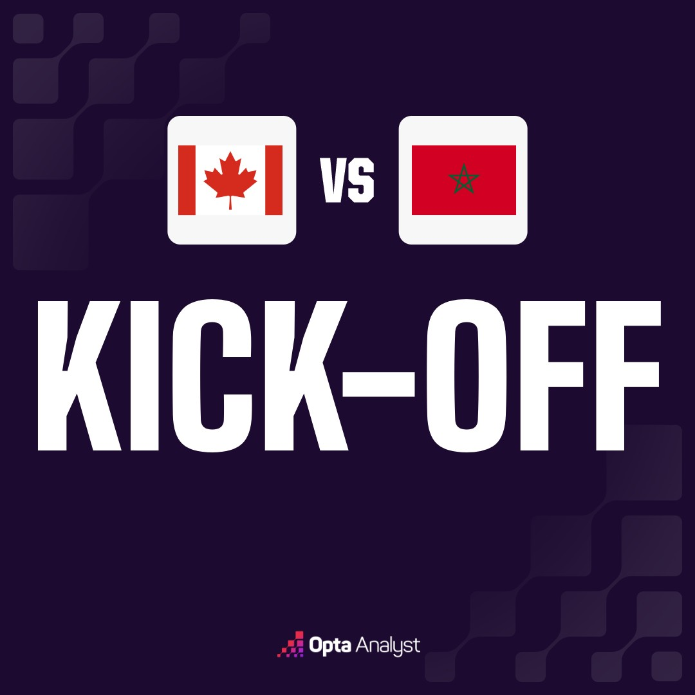
Achraf Hakimi is making his 15th appearance in the FIFA World Cup.
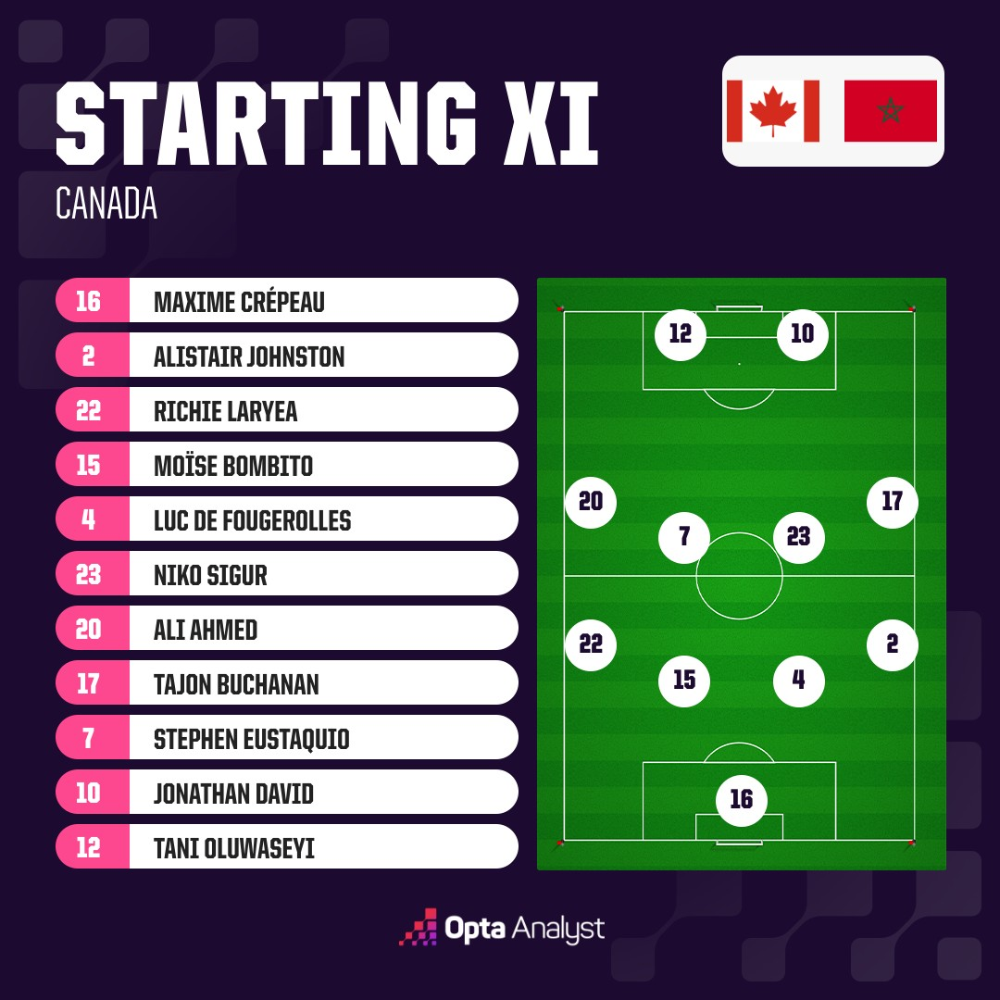
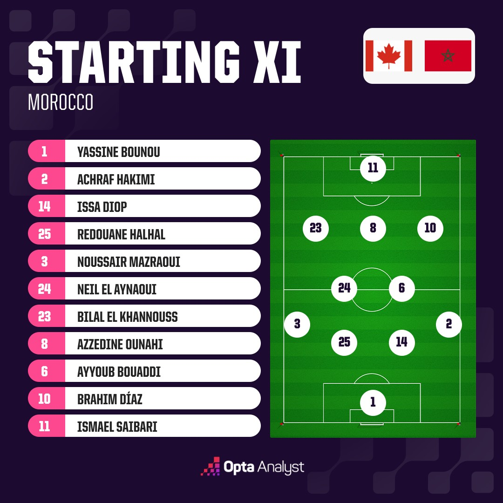
Canada have won their last 2 games at home when J. David has scored
Canada face Morocco on Saturday for a FIFA World Cup Round of 16 clash at Houston Stadium.
Canada won their last World Cup match, beating South Africa 1-0 in the round of 32 on June 28. Stephen Eustaquio was the only player to score in the win. In nine games this year, they have four wins, four draws, and one loss.
Morocco won their World Cup round of 32 game 1-1 (3-2) on penalties against the Netherlands on June 29. Neither team scored in the additional period, sending the sides to spot-kicks. Issa Diop was the sole player to net in the win. They are unbeaten in 33 in a row.
When the two sides last met in action, Morocco emerged victorious 2-1 in a 2022 World Cup match at Al Thumama Stadium in December 2022. Hakim Ziyech struck first for Morocco in the fourth minute. Youssef En-Nesyri also was on the scoresheet. Canada's only goal came courtesy of Morocco's Nayef Aguerd putting the ball in his own net.
Canada have been led by Jonathan David in World Cup play. He leads the team with three goals. Morocco have been led by Ismael Saibari, who has scored on three occasions in the current World Cup campaign, including two match-opening goals.
Both sides are in the midst of successful World Cup scoring streaks, as each have found the net in every match in the competition this season.
In their last six matches in all competitions, Canada have won three, drawn two and lost one. The Canadian side scored 12 and conceded four in that stretch, scoring first in four of the six contests. They had four first-half goals, while their opponents netted once in the first 45 minutes. The Moroccan side have won three and drawn three in their last six. The Moroccan side scored 12 and conceded five in that period, netting first in four of the six. Most of their goals (seven) came in the first half, while their opponents netted three times before the break.
-
General
Possession 44.6% 44.6155.3955.4% Possession lost in defensive half 19 194444 Possession lost in middle third 56 566363 Duels 111 111112112 Duels success rate 46.8% 46.84752.67952.7% Aerial duels 36 363636 Aerial duels won 44.4% 44.44455.55655.6% Successful dribbles 4 466 Fouls won 14 142424 Offsides 2 233 Corner awarded 11 1111 -
Distribution
Passes 358 358472472 Long passes 31 314949 Long passes proportion (%) 8.7% 8.65910.38110.4% Passing accuracy 76.0% 75.97882.41582.4% Passes in opponents' half 224 224138138 Passing accuracy in opponents' half (%) 69.2% 69.19659.4259.4% Total passes in the final third 137 1376262 Passing accuracy in final third (%) 63.5% 63.50454.83954.8% Forward passes 241 241295295 Forward passes (%) 67.3% 67.31862.562.5% Through balls 0 000 Final third entries 57 573737 Penalty area entries 42 4299 Total open play crosses 21 2144 Crosses 29 2955 Crossing accuracy 27.6% 27.5862020.0% -
Attack
Goals 0 033 Shots 10 1055 Shots on target 3 344 Blocked shots 3 300 Headed shots 1 111 Shots outside the box 4 422 Shots inside the box 6 633 Shots accuracy excluding blocked shots 42.9% 42.8578080.0% Shooting accuracy 30.0% 308080.0% Key Passes 8 855 -
Defence
Tackles 18 181212 Tackles success rate 55.6% 55.5567575.0% Clearances 10 105151 Interceptions 5 588 Recoveries 43 434444 Attacking third recovery 8 822 Defensive third recovery 15 152727 Midfield third recovery 20 201515 Recoveries in attacking half (%) 18.6% 18.6054.5454.5% -
Discipline
Fouls conceded 24 241414 Yellow cards 4 444 Red cards 0 000